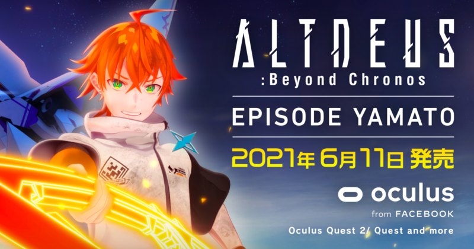

『ALTDEUS: Beyond Chronos（以下、アルトデウス: BC）』の新規エピソード『ALTDEUS: Beyond Chronos EPISODE YAMATO』のテーマソングを歌うアーティストが鈴木このみさんに決定したことを発表いたします。
楽曲名は「MEDDLER」。今回、鈴木このみさんは全編英語詞の歌唱をしています。疾走感の中にどこか切なさを感じさせる。今作の主人公であるヤマトの心情に寄り添った楽曲にご期待下さい。
また、今回の発表を記念し、『ALTDEUS: Beyond Chronos EPISODE YAMATO』第二弾PVを公開いたしました。
6月11日にOculus Questで配信となる『ALTDEUS: Beyond Chronos EPISODE YAMATO』。発売まで後2日です。どうぞよろしくお願いいたします。
■鈴木このみさんからのメッセージ
今回の「MEDDLER」は全編英語の歌詞になっていて、私にとってもチャレンジの楽曲になりました。サビがとても印象的ですので、ゲームをプレイされた皆さんの心に残っていただけると嬉しいです。とても美しい世界観の楽曲になっていますのでお楽しみに！
鈴木このみさん プロフィール
1996年11月5日生まれ、大阪府出身。2011年、第5回全日本アニソングランプリ決勝大会でグランプリを獲得し、翌2012年に「CHOIR JAIL」で15歳でデビュー。
TVアニメ「ノーゲーム・ノーライフ」オープニングテーマ「This game」、TVアニメ「Re:ゼロから始める異世界生活」のオープニングテーマ「Redo」など多くのTVアニメ主題歌を担当。2018年4月～放送のTVアニメ「LOST SONG」では、声優田村ゆかりとW主演声優を務め、オープニング主題歌「歌えばそこに君がいるから」も歌唱。2016年より4年連続Asia Tourも開催。上海、シンセン、香港、台湾、フィリピンにてワンマンライブを行う。2020年4月、TVアニメ「Re:ゼロから始める異世界生活」第2期のOPテーマも担当。2021年5月 TVアニメ『蜘蛛ですが、なにか？』2ndシーズンオープニングテーマ「Bursty Greedy Spider」をリリース。デビュー10周年に向かって活動中。
■タイトル
『ALTDEUS: Beyond Chronos EPISODE YAMATO』
■あらすじ
『ヤマト』視点で体感する、もう一つの物語。
プロメテオスに背を向け、アニマと逃げようとするクロエ。
ヤマトは仲間達の願いを胸に、クロエを連れ戻すため決死の覚悟で立ちはだかる。
■配信日
2021年6月11日
※Oculus Quest (1&2) 先行配信。他のプラットフォーム展開については後日発表いたします。
https://www.oculus.com/experiences/quest/2977398372335251/
■価格
Oculus 990円（税込）
■キャスト
ヤマト：CV.小林裕介
ノア：CV.花守ゆみり
アオバ：CV.荒牧慶彦
ジュリィ：CV.芹澤優
アニマ：CV.石川由依
アーク・アレス：CV.岡本信彦
クロエ：CV.鬼頭明里
{kind=link}
■ホームページ
https://altdeus.com/dlc/yamato/
■タイトル
ALTDEUS: Beyond Chronos（アルトデウス: ビヨンド クロノス）
■ ストーリー
2080年。人類は突如出現した超巨大生物＜メテオラ＞によって地下へ救いを求めた。
半径2キロの地下都市＜A.T(Augmented Tokyo)＞が人類最後の砦となっている。
2280年。メテオラに対抗する組織＜プロメテオス＞に属するクロエは、
人型都市防衛兵器マキアを操り、厳しい戦線を戦友たちと生き抜いてきた。
地下都市を＜メテオラ＞から守護し、いつか地上世界を取り戻す。
人類の目的とは乖離した意思で、クロエは今日も引き金を引く。
全ては"親友だった"コーコのため。
あの時、あの瞬間の選択と決断がクロエの心を焦がす。
そして、運命の歯車は急速に音を立てて廻りはじめる――。
コーコの姿をした＜メテオラ＞の襲来。
そう、これがクロエの＜現実＞なのだ。
ジャンル：VRインタラクティブストーリーアクション
対応プラットフォーム：Oculus Quest Oculus Rift Steam PlayStation VR
Oculus 好評発売中
https://www.oculus.com/experiences/quest/2977398372335251/
Steam 好評発売中
https://store.steampowered.com/app/1502080/ALTDEUS_Beyond_Chronos/
PlayStation VR 好評発売中
https://store.playstation.com/ja-jp/product/JP5016-CUSA19474_00-ALTDEUSBCMAIN000
プレイ人数：1人
価格：
Oculus 3,628円（税込: 3,990円）
Steam 4,982円 (税込: 5,480円)
PlayStation VR 通常盤: 4,980円 (税込: 5,478円) 特装版: 8,980円 (税込: 9,878円)
■キャスト
クロエ：CV.鬼頭明里
コーコ：CV.奥野香耶
ノア：CV.花守ゆみり
アニマ：CV.石川由依
ヤマト：CV.小林裕介
アオバ：CV.荒牧慶彦
ジュリィ：CV.芹澤優
デイター：CV.速水奨
■スタッフ
監督：柏倉晴樹
キャラクターデザイン：LAM
シナリオ：小山恭平 / カミツキレイニー / 高島雄哉
メカデザイン：I-IV
音楽：郡陽介 / 高橋邦幸（MONACA） / kz（livetune）
■『インタラクティブストーリーズ featuring 鬼頭明里』YouTubeで配信中
インタラクティブストーリーズ featuring 鬼頭明里は、VRゲーム『ALTDEUS： Beyond Chronos（アルトデウス：BC）』で主人公・クロエを演じる鬼頭明里さんがパーソナリティを務めるYouTubeラジオ番組です。
作品についての話題だけでなく、ゲストの人生で重要な選択と決断を訊くコーナーや大切な人への気持ちを代読するなど、番宣番組の枠にとどまらない内容でお送りしています。YouTubeの『Chronos Series Channel』で毎週木・土曜日の週2回配信。
公式HP：https://altdeus.com/
公式ツイッター：https://twitter.com/chronos_series
公式YouTubeチャンネル：https://www.youtube.com/channel/UCzYfmRE2d6uWI3WorYAbXTw/videos
■MyDearestについて
会社名 : MyDearest株式会社 (MyDearest Inc.)
所在地：東京都台東区浅草橋2-28-12 NKグリーンビル4階
設立：2016年4月
代表：代表取締役CEO 岸上健人
MyDearest株式会社は2019年に『東京クロノス』、2020年に『アルトデウス: BC』をリリースしたVRスタートアップ。企画・開発。音楽・プログラム・デザインなど全ての領域にクリエイターが揃っており、「ソードアート・オンライン」の担当編集として著名な、株式会社ストレートエッジ 代表取締役の三木一馬氏もアドバイザーとして参画している。
受賞歴
・第二回日本アントレプレナー大賞エンタメ部門受賞
・CAMPFIRE AWARDエンタメ部門受賞
・ファミ通・電撃ゲームアワード2019 アドベンチャー部門ノミネート